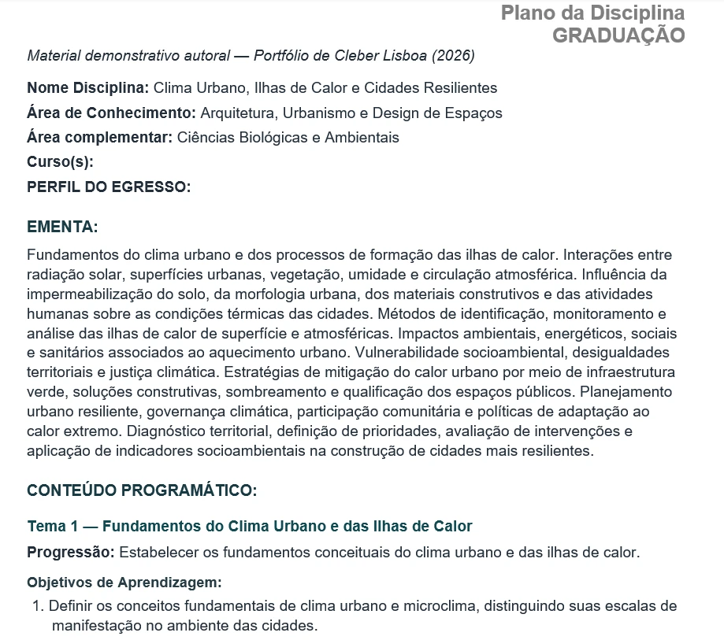

Transformar uma ementa curta em uma arquitetura pedagógica consistente.
Um Plano da Disciplina precisa articular escopo, progressão conceitual, objetivos de aprendizagem, atuação profissional e referências acadêmicas. Quando a IA participa desse processo, surgem riscos adicionais: estruturas excessivamente genéricas, objetivos vagos e bibliografias apenas plausíveis, mas não verificadas.
Projetar critérios para que a IA participe do planejamento sem substituir o julgamento pedagógico.
Minha atuação concentrou-se na arquitetura do sistema, na definição dos critérios educacionais e acadêmicos e no refinamento progressivo dos prompts. O foco não era apenas obter um documento formalmente completo, mas criar um processo reutilizável para diferentes disciplinas.
Planejamento curricular
Definição da lógica de seis Temas de Aprendizagem, progressão e equilíbrio de escopo entre as partes da disciplina.
Especialização por domínio
Estruturação de prompts por Área do Conhecimento para incorporar fronteiras, fontes, normas e contextos profissionais específicos.
Objetivos verificáveis
Criação de regras para objetivos claros, mensuráveis e associados à Taxonomia de Bloom.
Curadoria e Validação Acadêmica
Definição dos critérios de pesquisa, seleção e validação das referências antes da consolidação do plano.
Um sistema geral, especializado pelas características de cada área.
O sistema evoluiu de uma lógica generalista para uma arquitetura formada por um Prompt Mestre, responsável pelos princípios comuns, e prompts especializados de acordo com a Área do Conhecimento predominante. Essa separação permite manter padrão institucional sem apagar as diferenças entre campos acadêmicos.
especialização por
Área do Conhecimento
A ementa orienta a escolha da Área do Conhecimento; o Prompt Mestre preserva os critérios comuns e a camada especializada ajusta fontes, fronteiras e contextos profissionais do domínio.
Camada comum
Estrutura do Plano, seis Temas, regras para objetivos, observações, validações e entrega final.
Camada especializada
Subperfis, fronteiras do domínio, atuação profissional, tipos de fontes, legislação, normas e critérios técnicos quando aplicáveis.
Uma área principal
A ementa orienta a escolha de uma Área do Conhecimento predominante, evitando misturar indiscriminadamente critérios de domínios diferentes.
Interdisciplinaridade com controle
Áreas complementares podem ser consideradas quando realmente agregam à disciplina, sem substituir a área central.
Seis Temas não significam seis partes iguais.
A ementa é analisada em busca de núcleos conceituais, dependências e progressão. A distribuição precisa equilibrar conteúdo e complexidade, em vez de simplesmente repartir tópicos ou quantidade de palavras.
A progressão exata muda de acordo com a disciplina; o diagrama representa a lógica de organização, não uma sequência temática fixa.
Bloom como mecanismo de controle de qualidade — não como ornamento terminológico.
Os objetivos precisam iniciar com verbos no infinitivo, ser claros, observáveis, verificáveis e diretamente relacionados ao conteúdo do tema. A Taxonomia de Bloom serve para controlar a operação cognitiva pretendida e evitar formulações vagas.
Evitar
- formulações excessivamente abstratas;
- verbos que dificultam verificação;
- objetivos desconectados do conteúdo;
- repetição mecânica do mesmo nível cognitivo.
Priorizar
- verbos no infinitivo;
- ações observáveis e mensuráveis;
- coerência com o nível de complexidade;
- relação explícita com o Tema de Aprendizagem.
Uma referência que parece existir ainda não é uma referência válida.
O sistema estabelece critérios específicos para pesquisa e curadoria. Fontes incompletas ou não confirmadas não devem permanecer apenas porque parecem academicamente plausíveis.
A curadoria prioriza, conforme a necessidade do tema, literatura recente, trabalhos altamente citados, clássicos indispensáveis e livros de referência adequados à graduação.
A IA amplia a capacidade de análise. O julgamento pedagógico continua humano.
IA
Analisa a ementa, organiza propostas, apoia pesquisa, estrutura objetivos e apresenta referências candidatas segundo as regras do sistema.
Design Educacional
Avalia a coerência, questiona escolhas, ajusta fronteiras, verifica adequação pedagógica e aprova a estrutura final da disciplina.
A arquitetura se materializa em um plano estruturado.
A saída do sistema organiza a ementa em uma estrutura curricular coerente, articulando Área do Conhecimento, Temas de Aprendizagem, progressão, objetivos e referências acadêmicas verificáveis.

O domínio principal orienta critérios acadêmicos e profissionais do plano.
A ementa é distribuída por progressão conceitual, não por divisão mecânica.
Cada tema recebe objetivos mensuráveis alinhados ao conteúdo e à operação cognitiva.
Um processo especializado e reutilizável para planejamento de disciplinas.
O projeto transformou uma tarefa aberta em um sistema com critérios de domínio, estrutura curricular, objetivos verificáveis e curadoria acadêmica. Em vez de depender de um comando genérico para cada nova ementa, o processo passou a contar com uma arquitetura replicável e adaptável.
Especialização e verificabilidade se tornaram princípios de arquitetura.
O desenvolvimento mostrou que sistemas acadêmicos ganham qualidade quando reconhecem as particularidades de cada domínio e quando suas decisões podem ser conferidas. Quanto maior a participação da IA em tarefas de pesquisa e planejamento, maior precisa ser a atenção aos critérios que sustentam a resposta.
“Um plano de disciplina não precisa apenas parecer coerente. Seus objetivos, fontes e decisões pedagógicas precisam ser verificáveis.”